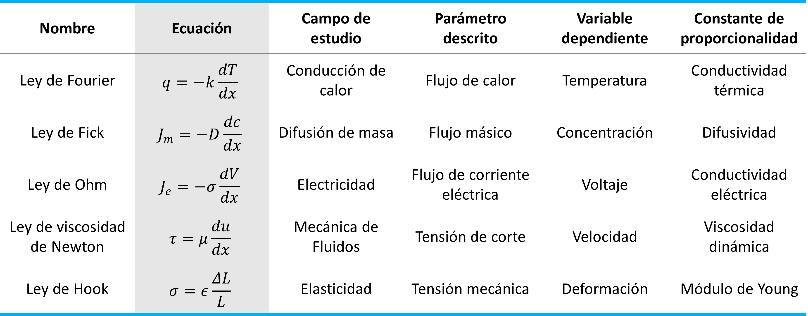
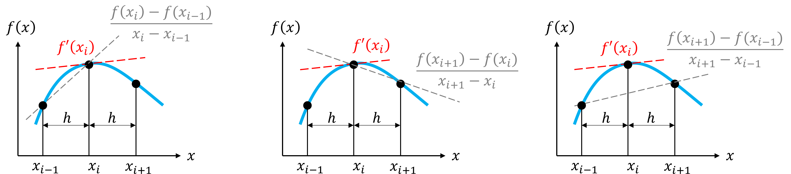
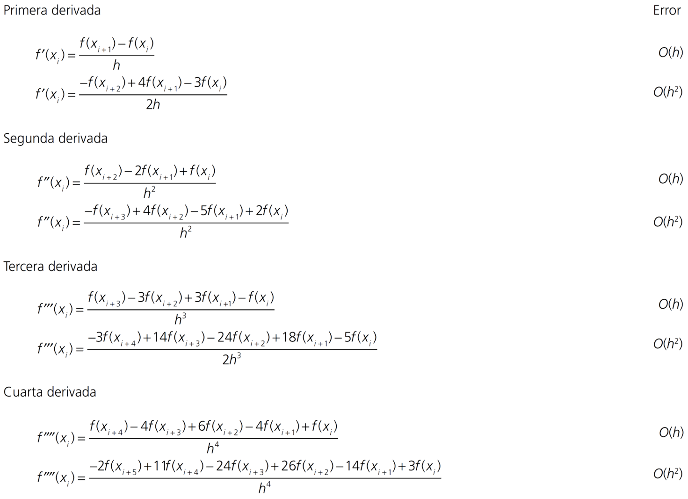
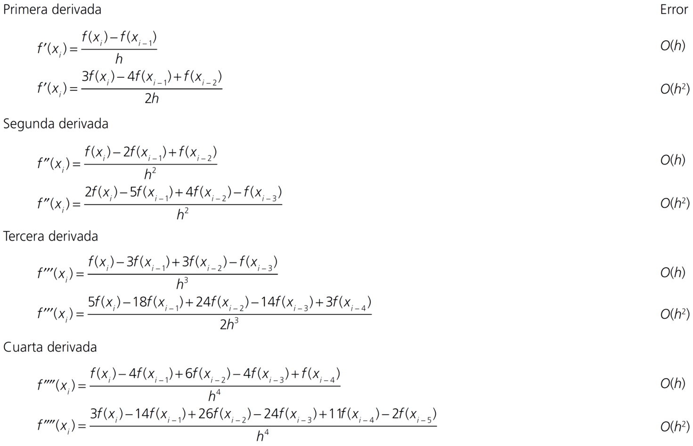
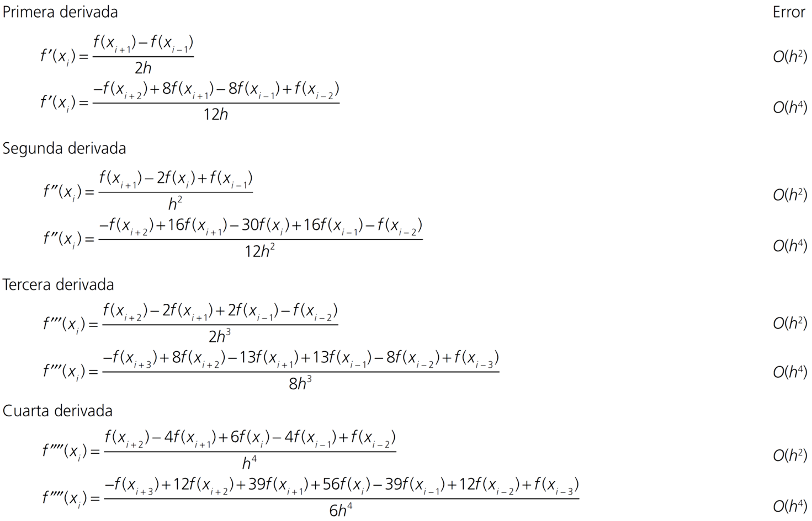

Derivación numérica
Contents
MEC301 - Métodos Numéricos
8. Derivación numérica#
Profesor: Francisco Ramírez Cuevas
Fecha: 26 de Septiembre 2022
8.1. Introducción#
La derivada representa la taza de cambio de una variable dependiente respecto de una variable independiente. Es una herramienta de uso común en diversas áreas de ingeniería, por ejemplo:
{kind=link}
En todos estos ejemplos, la variable independiente corresponde a la posición \(x\).
8.2. Diferencias Finitas#
8.2.1. Derivada de primer orden#
Matemáticamente, representamos la derivada \(f'(x)\) de una función \(f(x)\) en el punto \(x=a\) como:
Gráficamente, para \(a = x_i\) entre dos valores igualmente espaciados \(x_{i-1}\) y \(x_{i+1}\), con \(h = x_i - x_{i-1}\), tenemos tres alternativas para aproximar \(f'(x_i)\):
{kind=link}
Esta aproximación se denomina diferencias finitas.
Al igual que en la unidad anterior, podemos usar series de Taylor para evaluar el error de truncamiento asociado a cada aproximación.
Consideremos la serie de Taylor de \(f(x)\) centrada en \(x_i\):
Evaluando esta expansión en \(x_{i-1}\),
y despejando \(f'(x_i)\) nos da la fórmula de derivada hacia atrás:
Similarmente, si evaluamos la expansión en \(x_{i+1}\),
y luego despejamos \(f'(x_i)\), obtenemos la fórmula de derivada hacia adeltante:
Finalmente, consideremos la diferencia \(f(x_{i+1}) - f(x_{i-1})\), con \(x_{i+1} - x_i = h\) y \(x_{i-1} - x_i = -h\):
Despejando para \(f'(x_i)\), obtenemos la fórmula para derivada central:
A partir de este análisis podemos concluir que la derivada central tiene un mayor orden de presición.
Comprobemos esto con la derivada del polinomio:
en \(x = 0.5\), y considerando \(h=0.10\).
Para comprobar el error consideraremos el valor exácto \(f'(5)=-0.9125\)
f = lambda x: -0.1*x**4 - 0.15*x**3 - 0.5*x**2 - 0.25*x + 1.2
df_exact = -0.9125
h = 0.1 # espaciamiento
xi = 0.5 # valor central
x = [xi-h, xi, xi+h] # puntos a evaluar
df_bw = (f(x[1]) - f(x[0]))/(x[1] - x[0]) # derivada hacia atrás
df_fw = (f(x[2]) - f(x[1]))/(x[2] - x[1]) # derivada hacia adelante
df_ct = (f(x[2]) - f(x[0]))/(x[2] - x[0]) # derivada central
print("f'(5) = %-5f; Error = %.5f (Derivada hacia atrás)" % (df_bw, abs(df_exact - df_bw)))
print("f'(5) = %-5f; Error = %.5f (Derivada hacia adelante)" % (df_fw, abs(df_exact - df_fw)))
print("f'(5) = %-5f; Error = %.5f (Derivada central)" % (df_ct, abs(df_exact - df_ct)))
f'(5) = -0.828400; Error = 0.08410 (Derivada hacia atrás)
f'(5) = -1.003600; Error = 0.09110 (Derivada hacia adelante)
f'(5) = -0.916000; Error = 0.00350 (Derivada central)
A partir de este resultado vemos como el error de diferencia hacia atrás y adelante es \(O(h) \sim 0.1\), mientras que para diferencia central el error es \(O(h^2) \sim 0.01\)
Como segundo ejemplo, evaluemos el crecimiento del error en este problema a medida que aumentamos \(h\)
import numpy as np
xi = 0.5 # valor central
h_array = np.logspace(-5,0,20) # arreglo de h desde 10^-5 a 10^0
#h_array = np.linspace(0.00001,0.1,20)
# Creamos un arreglo de ceros para cada error. Este arreglo será
# completado en un loop para cada valor de "h"
error_bw = np.zeros(h_array.shape) # Error por diferencia hacia atrás
error_fw = np.zeros(h_array.shape) # Error por diferencia hacia adelante
error_ct = np.zeros(h_array.shape) # Error por diferencia central
# generamos un loop respecto a los índices de h_array
for j in range(len(h_array)):
h = h_array[j]
x = [xi-h, xi, xi+h] # puntos a evaluar
df_bw = (f(x[1]) - f(x[0]))/(x[1] - x[0]) # derivada hacia atrás
df_fw = (f(x[2]) - f(x[1]))/(x[2] - x[1]) # derivada hacia adelante
df_ct = (f(x[2]) - f(x[0]))/(x[2] - x[0]) # derivada central
# almacenamos el error de cada caso en un arreglo
error_bw[j] = abs(df_exact - df_bw)
error_fw[j] = abs(df_exact - df_fw)
error_ct[j] = abs(df_exact - df_ct)
%%capture showplot1
import matplotlib.pyplot as plt
from numpy import log, polyfit
plt.figure(figsize = (7, 5)) # Tamaño de figura
plt.rcParams.update({'font.size': 18}) # Tamaño de fuente
plt.plot(h_array,error_bw,'ob',label='backward',alpha=0.5)
plt.plot(h_array,error_fw,'or',label='forward' ,alpha=0.5)
plt.plot(h_array,error_ct,'ok',label='central' ,alpha=0.5)
# analizamos la pendiente del logaritmo de cada aproxmación
abw = polyfit(log(h_array), log(error_bw),1)
afw = polyfit(log(h_array), log(error_fw),1)
act = polyfit(log(h_array), log(error_ct),1)
# imprimimos el valor de la pendiente en el gráfico
plt.text(1E-4,1E-5,'$\sim h^{%.3f}$' % abw[0], color='b')
plt.text(1E-4,1E-3,'$\sim h^{%.3f}$' % afw[0], color='r')
plt.text(1E-4,1E-9,'$\sim h^{%.3f}$' % act[0], color='k')
# graficamos en escala logarítmica para visualizar la pendiente
plt.xscale('log')
plt.yscale('log')
plt.xlabel('Espaciamiento, $h$')
plt.ylabel("Error absoluto")
plt.title("Aproximación de $f'(x)$")
plt.legend(frameon=False, loc='lower right')
plt.show()
showplot1()
8.2.2. Derivadas de segundo o mayor orden#
Mediante un procedimiento similar, podemos generar aproximacióndes de diferencias finitas para derivadas de mayor orden.
Por ejemplo, consideremos la suma de las expansiones \(f(x_{i+1})\) y \(f(x_{i-1})\) centradas en \(x_i\),
Despejando para \(f''(x_i)\), obtenemos la fórmula para la segunda derivada por diferencia central:
Podemos extender nuestro resultado para determinar fórmulas de diferencas finitas para derivadas de mayor orden. A continuación mostramos un resumen con algunas de estas fórmulas:
Diferencia hacia adelante
{kind=link}
Diferencia hacia atrás
{kind=link}
Diferencia central
{kind=link}
8.2.3. Derivadas parciales#
Podemos extender las fórmulas de diferencias finitas anteriores para derivadas parciales.
Por ejemplo, utilizando diferencia central:
8.3. Diferencias Finitas en Python#
Podemos clasificar las funciones de derivadas de python, en dos tipos:
Derivación mediate datos tabulados:
numpy.diff,numpy.gradient,scipy.interpolate.CubicSpline.Derivación mediante función conocida:
scipy.misc.derivative
8.3.1. Diferencias finitas con datos tabulados#
Consideremos el siguiente set de datos tabulados \(x_i\) y \(f(x_i)\) correspondientes a la función \(f(x) = \sin(x)\).
# Valores xi tabulados (no igualmente espaciados)
xi = np.array([ 0, 0.72878679, 1.23516778, 2.00081088, 2.77801068, 3.10970675, 3.93589864, 4.14861853, 5.18938779, 5.39179938, 2*np.pi])
# Valores yi = sin(xi) tabulados
yi = np.array([ 0, 0.66596509, 0.94420348, 0.90895968, 0.35562432, 0.0318805 , -0.71337743, -0.84524628, -0.88837681, -0.77794332, 0])
%%capture showplot2
import matplotlib.pyplot as plt
plt.figure(figsize = (7, 5)) # Tamaño de figura
plt.rcParams.update({'font.size': 18}) # Tamaño de fuente
# Graficamos sin(x) y junto con (xi,yi)
f = lambda x: np.sin(x)
x = np.linspace(0,2*np.pi,100)
plt.plot(xi,yi,'or') # datos tabulados
plt.plot(x,f(x),':b') # función sin(x)
plt.xlabel('x')
plt.ylabel('sin(x)')
plt.grid()
plt.show()
showplot2()
Función numpy.diff. Esta función determina la diferencia entre
los dos valores más cercanos en un arreglo.
En otras palabras, para un arreglo x[0],x[1], ... x[n],
numpy.diff = x[1] - x[0], x[2] - x[1], ... , x[n]- x[n-1].
Así, para un arreglo de tamaño \(N\), numpy.diff entrega un arreglo de tamaño \(N-1\).
Si bien la función no entrega la derivada directamente, se puede usar para determinar \(f'(x)\) de forma sencilla. Así, para un arreglo de valores xi, yi, \(f'(x)\) se puede determinar por:
dfdx = np.diff(yi)/np.diff(xi) # f'(x)
Debido a la forma en la que opera numpy.diff, el resultado corresponde a diferencia hacia adeltante o hacia atrás. Esto dependiendo de como asignemos dfdx[i].
Evaluemos la función numpy.diff en nuestro ejemplo con datos tabulados. Comparamos el resultado con el valor exácto \(f'(x) = \cos(x)\).
%%capture showplot3
# Evaluamos numpy.diff
dfdx = np.diff(yi)/np.diff(xi)
plt.figure(figsize = (7, 5)) # Tamaño de figura
plt.rcParams.update({'font.size': 16}) # Tamaño de fuente
plt.plot(xi[1:],dfdx,'ob',label='backward')
plt.plot(xi[:-1] ,dfdx,'or',label='forward')
plt.plot(x,np.cos(x),':k',label='$\cos (x)$')
plt.legend()
plt.xlabel('x')
plt.ylabel("$f'(x) = \cos(x)$")
plt.show()
showplot3()
Función numpy.gradient. Esta es una función más optimizada y específica para calcular derivadas. La función gradient calcula directamente la derivada de una función
dfdx = np.gradient(yi,xi) # f'(x)
Para los valores centrales gradient utiliza diferencia central, y para los valores extremos diferencia hacia atrás o hacia adelante, es decir:
dfdx[0] = (y[1] - y[0] )/(x[1] - x[0]) # diferencia hacia adelate
dfdx[n] = (y[n] - y[n-1])/(x[n] - x[n-1]) # diferencia hacia atrás
Así, para un arreglo de tamaño \(N\), numpy.gradient entrega un arreglo de tamaño \(N\).
Evaluemos la función numpy.gradient en nuestro ejemplo con datos tabulados. Comparamos el resultado con el valor exácto \(f'(x) = \cos(x)\).
%%capture showplot4
# Evaluamos numpy.diff
dfdx = np.gradient(yi,xi)
plt.figure(figsize = (7, 5)) # Tamaño de figura
plt.rcParams.update({'font.size': 16}) # Tamaño de fuente
plt.plot(xi,dfdx,'or',label='gradient')
plt.plot(x,np.cos(x),':k',label='$\cos (x)$')
plt.legend()
plt.xlabel('x')
plt.ylabel("$f'(x) = \cos(x)$")
plt.show()
showplot4()
Una tercera alternativa para determinar la derivada es mediante la función CubicSpline de scipy.interpolate. A diferencia de diff y gradient, CubicSpline permite determinar derivadas de segundo y tercer orden directamente.
from scipy.interpolate import CubicSline
dfdx = CubicSpline(xi,yi).derivative(1) # función f'(x) a partir de spline cúbico
dfdx2 = CubicSpline(xi,yi).derivative(2) # función f''(x) a partir de spline cúbico
dfdx3 = CubicSpline(xi,yi).derivative(3) # función f'''(x) a partir de spline cúbico
NOTA En el ejemplo estamos generando una variable de tipo callable. Es decir, si queremos saber \(f'(x_i)\) debemos ejecutar
dfdx(xi)
Debido a que CubicSpline está basada en un polinomio de orden 3, la función aproximada tiene un error del orden \(O(h^4)\). Así, la primera derivada de CubicSpline tiene un error del orden \(O(h^3)\), la segunda \(O(h^2)\), y la tercera \(O(h)\).
Alternativamente, según lo revisado en la unidad de interpolación, podemos usar CubicSpline para determinar la derivada mediante:
from scipy.interpolate import CubicSline
y = CubicSpline(xi,yi) # función f(x) a partir de spline cúbico
dfdx = y(xi,1) # f'(xi)
Analicemos el ejemplo con datos tabulados usando CubicSpline
%%capture showplot5
from scipy.interpolate import CubicSpline
# generamos una función de interpolación
dfdx = CubicSpline(xi,yi).derivative(1)
plt.figure(figsize = (7, 5)) # Tamaño de figura
plt.rcParams.update({'font.size': 16}) # Tamaño de fuente
plt.plot(xi,dfdx(xi),'or',label='CubicSpline')
plt.plot(x,np.cos(x),':k',label='$\cos (x)$')
plt.legend()
plt.xlabel('x')
plt.ylabel("$f'(x) = \cos(x)$")
plt.show()
showplot5()
8.3.2. Derivada de una función conocida#
Si la función a derivar es conocida, podemos usar scipy.misc.derivative para determinar la derivada.
La derivada es aproximada mediante diferencia central.
from scipy.misc import derivative
dfdx = derivative(fun,x0,dx=h)
donde:
fun: función a derivar en formato callablex0: valor donde se evalúa la derivada, formato floatdx: espaciamiento \(h\). Por defectodx=1
La función solo admite un valor tipo float para evaluar la derivada. Sin embargo, es una buena alternativa para determinar la derivada en un punto \(x_0\), sin la necesidad de generar un arreglo.
Por ejemplo, analicemos la derivada de \(f(x)=\sin(x)\) en \(x_0 = \pi/3\), a medida que reducimos el espaciameniento \(h\). Como valor exacto tenenmos \(f'(\pi/3)=\cos(\pi/3) = 1/2\)
from scipy.misc import derivative
f = lambda x: np.sin(x) # función en formato callable
h_array = np.array([0.5,0.4,0.3,0.2,0.1]) # arreglo de espaciamiento h
x0 = np.pi/3 # punto de evaluación de la derivada
dfdx_exact = 0.5 # valor exacto de la derivada
for h in h_array:
dfdx = derivative(f,x0,dx=h)
print('h = %.3f, dfdx = %.3f, error = %.3e' % (h, dfdx,abs(dfdx - dfdx_exact)))
h = 0.500, dfdx = 0.479, error = 2.057e-02
h = 0.400, dfdx = 0.487, error = 1.323e-02
h = 0.300, dfdx = 0.493, error = 7.466e-03
h = 0.200, dfdx = 0.497, error = 3.327e-03
h = 0.100, dfdx = 0.499, error = 8.329e-04
8.4. Referencias#
Kong Q., Siauw T., Bayen A. M. Chapter 2: Numerical Diferenciation in Python Programming and Numerical Methods – A Guide for Engineers and Scientists, 1st Ed., Academic Press, 2021
Chapra S., Canale R. Capítulo 23: Diferenciación numérica en Métodos Numéricos para Ingenieros, 6ta Ed., McGraw Hill, 2011